3 Übungsaufgaben Quadratische Gleichungen
3.1 Gemischte Aufgaben
- Geben Sie jeweils die Lösungsmenge der quadrierten Gleichung an.
- \((x - 3)^2 = 16\)
- \((x - 4)^2 = 81\)
- \((2x - 3)^2 = 16\)
- \((x + 5)^2 = (x - 3)^2\)
- \((2x - 1)^2 = (x + 3)^2\)
- \((2x - 3)^2 = (3x + 8)^2\)
- \((2x - 5)^2 = (x + 4)^2\)
- \((2x - 3)^2 = (2x + 4)^2\)
- \((2x - 3)^2 - (x - 6)^2 = 0\)
- \(\mathbb{L} = \{7,\,-1\}\)
- \(\mathbb{L} = \{13,\,-5\}\)
- \(\mathbb{L} = \{\tfrac{7}{2},\,-\tfrac{1}{2}\}\)
- \(\mathbb{L} = \{-1\}\)
- \(\mathbb{L} = \{4,\,-\tfrac{2}{3}\}\)
- \(\mathbb{L} = \{-11,\,-1\}\)
- \(\mathbb{L} = \{9,\;\tfrac{1}{3}\}\)
- \(\mathbb{L} = \{-\tfrac{1}{4}\}\)
- \(\mathbb{L} = \{-3,\;3\}\)
- Wählen Sie jeweils eine geeignete Lösungsmethode und geben Sie die Lösungsmenge der quadratischen Gleichung an.
- \((x - 3)(x + 4) = 0\)
- \(x^2 - 144 = 0\)
- \(x^2 - 5x + 6 = 0\)
- \((2x + 6)^2 = 49\)
- \(x^2 - x = 20\)
- \(5x^2 = 125\)
- \(x^2 - 2x - 63 = 0\)
- \((2x + 7)^2 = 289\)
- \(3x^2 - 300 = 0\)
- \(\mathbb{L} = \{3,\,-4\}\)
- \(\mathbb{L} = \{12,\,-12\}\)
- \(\mathbb{L} = \{2,\;3\}\)
- \(\mathbb{L} = \{\tfrac{1}{2},\,-\tfrac{13}{2}\}\)
- \(\mathbb{L} = \{5,\,-4\}\)
- \(\mathbb{L} = \{5,\,-5\}\)
- \(\mathbb{L} = \{9,\,-7\}\)
- \(\mathbb{L} = \{5,\,-12\}\)
- \(\mathbb{L} = \{10,\,-10\}\)
- Wählen Sie jeweils eine geeignete Lösungsmethode und geben Sie die Lösungsmenge der quadratischen Gleichung an.
- \(x^2 - 7x = 120\)
- \(-2x^2 = 98\)
- \((3x + 12)(x - 11) = 0\)
- \((2x + 6)^2 = 49\)
- \((x + 6)^2 = (x + 7)^2\)
- \(x^2 - 5x - 14 = 0\)
- \((2x + 3)^2 - 169 = 0\)
- \(x^2 + 16 = 0\)
- \(x^2 = (5x - 18)^2\)
- \(\mathbb{L} = \{15,\,-8\}\)
- Keine reelle Lösung (\(\mathbb{L} = \{\}\))
- \(\mathbb{L} = \{-4,\;11\}\)
- \(\mathbb{L} = \{\tfrac{1}{2},\,-\tfrac{13}{2}\}\)
- \(\mathbb{L} = \{-\tfrac{13}{2}\}\)
- \(\mathbb{L} = \{7,\,-2\}\)
- \(\mathbb{L} = \{5,\,-8\}\)
- Keine reelle Lösung (\(\mathbb{L} = \{\}\))
- \(\mathbb{L} = \{\tfrac{9}{2},\;3\}\)
- Wählen Sie jeweils eine geeignete Lösungsmethode und geben Sie die Lösungsmenge der quadratischen Gleichung an.
- \((x + 3)^2 = 0\)
- \((8 - x)^2 = 144\)
- \(x^2 - 5x = 24\)
- \((3x - 16)^2 = (4x - 19)^2\)
- \((11x + 12 - 3x)(11 + 12x - 3) = 0\)
- \((7x - 5)^2 = (2x + 5)^2\)
- \(x^2 - 15x = -50\)
- \((4 - 3x)^2 - (2x + 5)^2 = 0\)
- \((4x - 9)^2 = 36\)
\(\mathbb{L} = \{-3\}\)
\(\mathbb{L} = \{-4,\;20\}\)
\(\mathbb{L} = \{8,\,-3\}\)
\(\mathbb{L} = \{3,\;5\}\)
Gleichung vereinfacht zu \((8x+12)(12x+8)=0\), Lösungen: \(\{-\tfrac{3}{2},\,-\tfrac{2}{3}\}\)
\(\mathbb{L} = \{2,\;0\}\)
\(\mathbb{L} = \{10,\;5\}\)
\(\mathbb{L} = \{-\tfrac{1}{5},\;9\}\)
\(\mathbb{L} = \{\tfrac{15}{4},\;\tfrac{3}{4}\}\)
3.2 Rein quadratische Gleichung
DMK, Kapitel 4.2., Seite 98, Aufgaben:
- 50
- 51
- 52
- 53
- 54
- 56
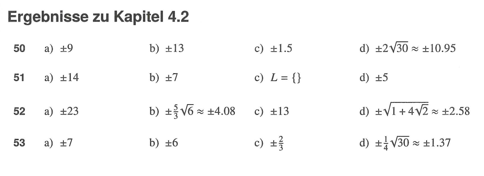 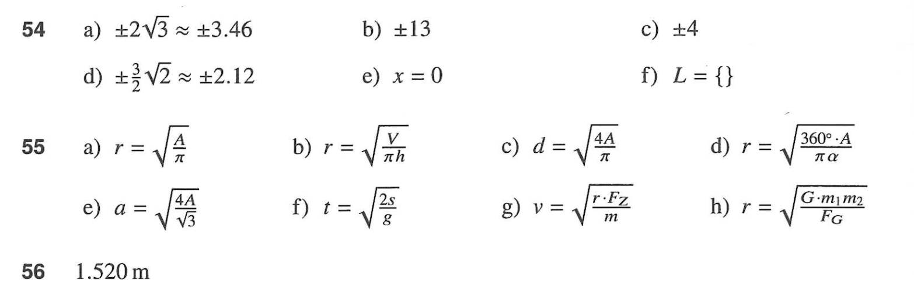
Seite 99, Aufgaben:
- 59
- 60
- 61
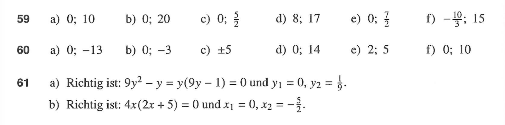
3.3 Allgemeine Quadratische Gleichung
3.3.1 pq-Formel
DMK, Kapitel 4.2., Seite 101, Aufgaben:
(Ignoriert die Anweisung aus dem DMK, dass die mit der allgemeinen Formel gelöst werden soll. Löst diese Aufgaben mit der pq-Formel!)
- 67
- 69
- 71
3.3.2 Mitternachtsformel
DMK, Kapitel 4.2., Seite 101, Aufgaben:
(Hier bitte gerne mit der Mitternachtsformel lösen.)
- 68
- 70
- 72

3.3.3 Gemischte Aufgaben
Seite 102, Aufgaben:
- 74
- 75
- 76
- 77
- 78
- 79
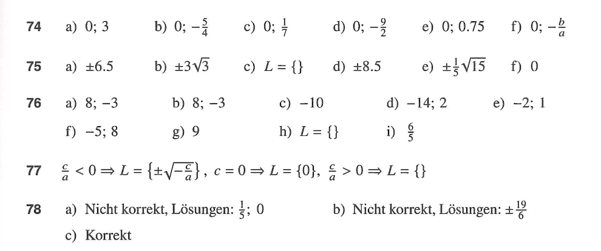 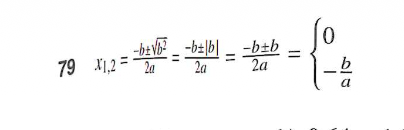
Seite 103, Aufgaben:
- 82
- 83
- 84
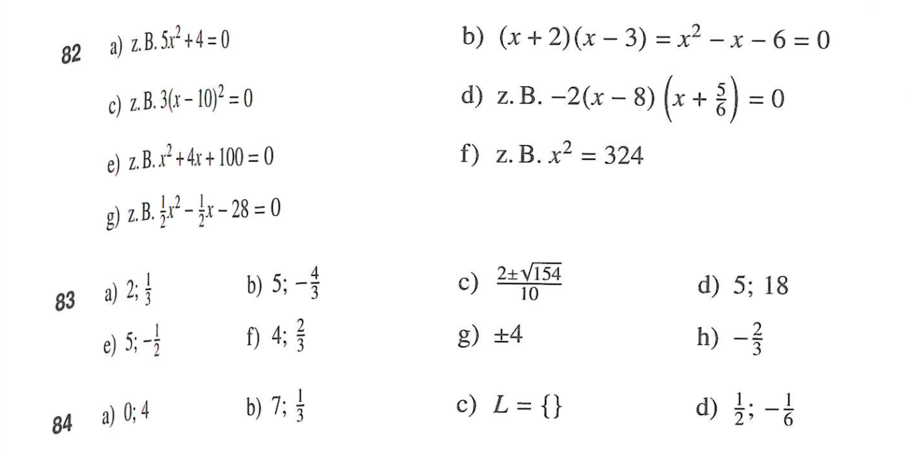
Seite 104, Aufgaben:
- 89
- 90
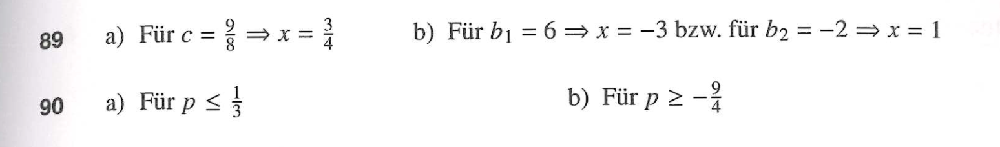
Seite 109, Aufgaben:
- 124
- 125
- 126
- 128
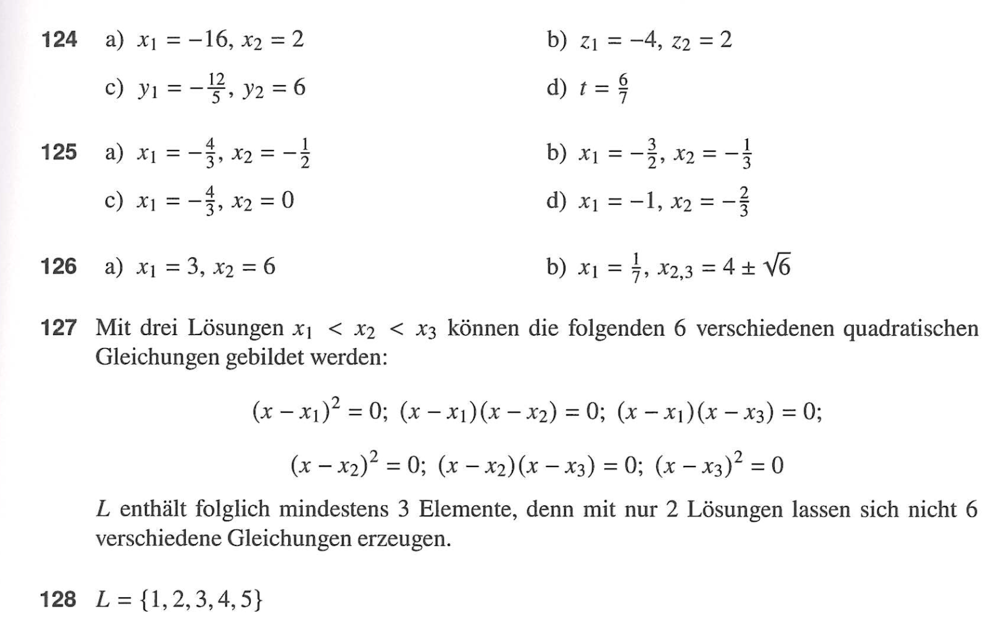
3.4 Quadratische Funktionen
Seite 120, Aufgaben:
Bestimmt insbesondere auch die Nullstellen und Scheitelpunkt der Funktionen folgender Aufgaben
- 198
- 199
- 200
- 201
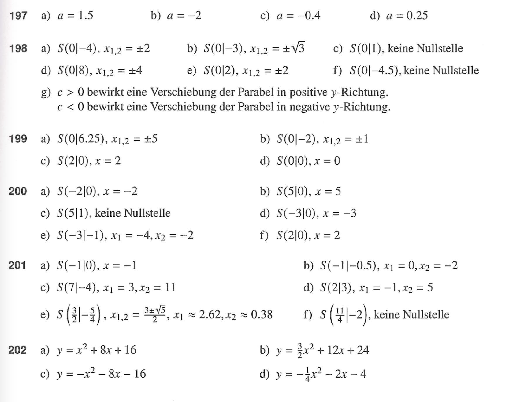
Seite 121, Aufgaben:
Neu: Auch mit Berechnung der Nullstellen
- 206
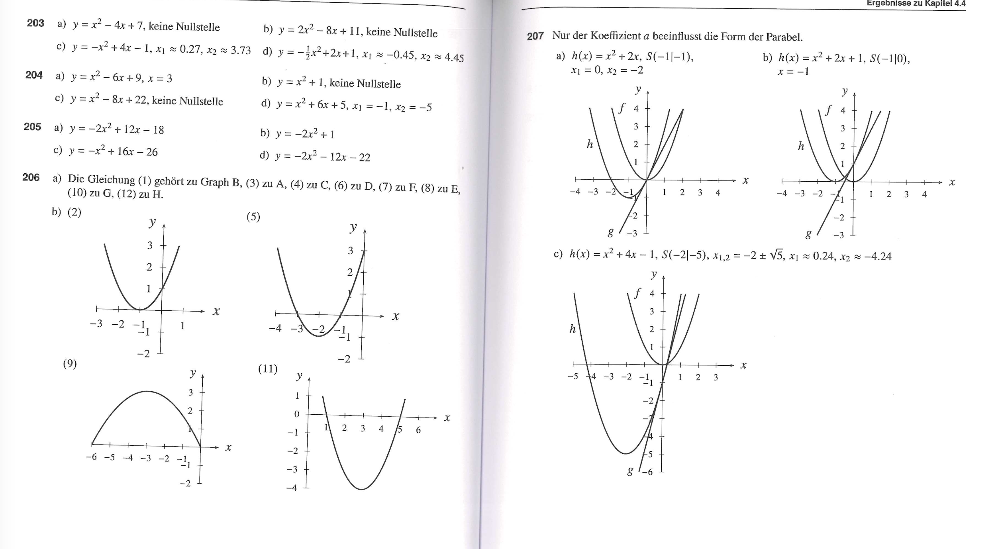
Seite 123, Aufgaben:
- 221
- 222
- 225
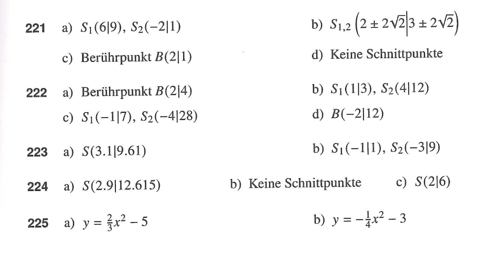
Seite 129, Aufgaben:
- 262
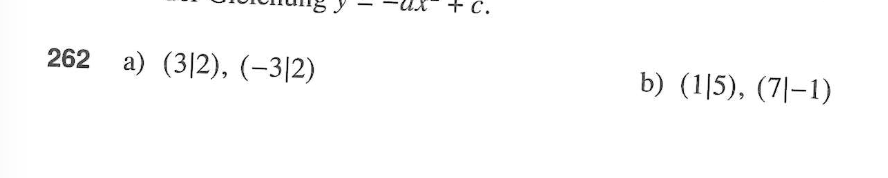
3.5 Textaufgaben
Seite 105, Aufgaben:
- 100
- 101
- 102
- 103
- 104
Seite 106, Aufgaben:
- 106
- 107
- 108
- 110
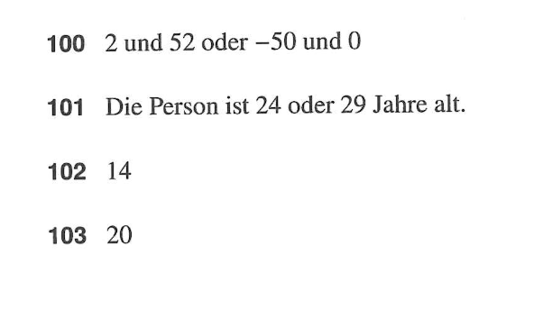 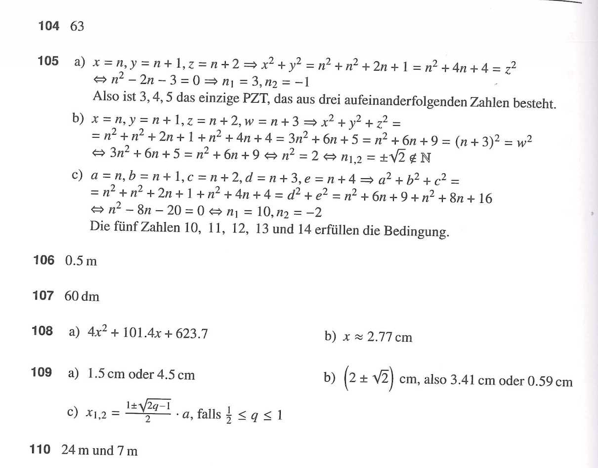
Seite 108, Aufgaben:
- 119
- 120
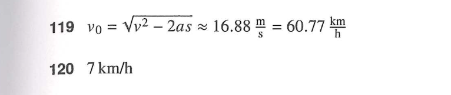
3.6 Substitution
Seite 111, Aufgaben:
- 139
- 140
- 141
- 142
Seite 112, Aufgaben:
- 143
- 144
- 145
- 146
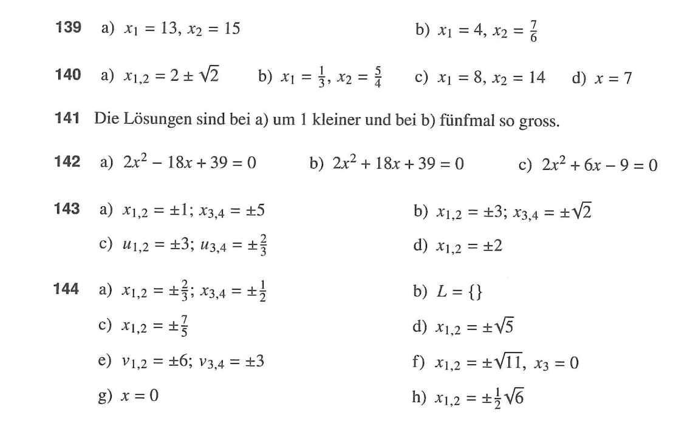